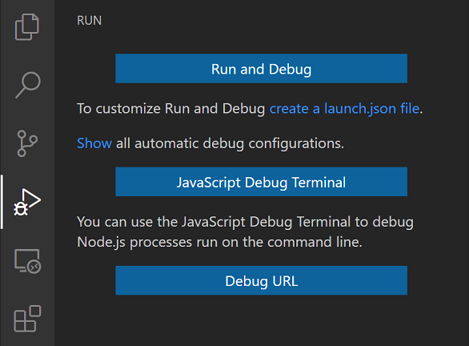
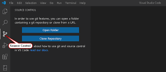

La interfaz de usuario, Interacción Humano Ordenador
Visual Basic y sus herramientas ofrecen una plataforma gráfica para realizar interfases de una manera sencilla,
utilizando características que el sistema operativo Windows ofrece para que el usuario observe una interfase atractiva y la pueda relacionar con los demás programas del sistema,
ya que los programas realizados con dichas herramientas no pierden el estilo que Windows brinda al usuario.
Capitulo2 Interface Visual Basic Recuperado de (http://catarina.udlap.mx/u_dl_a/tales/documentos/lem/morales_h_oe/capitulo2.pdf)
Elementos de Visual Basic
Proyecto: Es un programa que está formado por formas y módulos
Run and Debug
Para ejecutar el código: use el atajo Ctrl + Alt + N. o presione F1 y luego seleccione / escriba Ejecutar código, o haga clic con el botón derecho en el Editor de texto y luego haga clic en Ejecutar código en el menú contextual del editor.

Souerse Control
La API de control de fuente permite a los autores de extensiones definir funciones de Gestión de control de fuente (SCM). Hay una superficie API delgada pero poderosa que permite integrar muchos sistemas SCM diferentes en Visual Studio Code, al tiempo que tiene una interfaz de usuario común con todos ellos.
